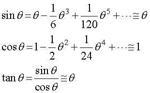

レンズがいかにして光を集光するかについては，ここ，でお示ししましたが，
レンズの曲率と焦点距離との関係はどうなっているのだろう？
という点について考えていきたいと思います．
この問題は，いろいろなところで取り上げられていて，
レンズメーカーの式
と光学の教科書の初歩に出てくるような問題であると思います．
今回は，きちんと考えていって，その応用として，
水中での焦点距離はどのくらい変わるのだろうか？
を考えていきたいと思います．
なお，今回の計算は，ここ，を参考にしました，ありがとうございます．
まず，大前提として，
レンズの曲率はとても大きい → レンズの厚みは無視できる
レンズの中心付近を通る光線のみを考える → 三角関数を近似できる
として考えます．
・レンズの曲率はとても大きい
そもそも，曲率とは，
ある曲線を円の一部として考える
ものであり，そのときの半径を曲率半径と呼びます．
すなわち，
レンズの曲面を円の一部として考える
と言うものです．
ですので，曲率がとても大きい，と言うことは，
レンズの厚みは焦点距離に対して無視できるほど小さい
という近似が成り立ちます．
・レンズの中心付近を通る光線のみを考える
と言うことで，光線とレンズに垂直な軸とのなす角度を小さくすることができます．
その結果，三角関数を近似することができます．具体的には，マクローリン展開，で示したように，

と簡単にすることができます．
では，まず最初に，ある曲率を持ったレンズに平行光を入射した場合を考えていきましょう．